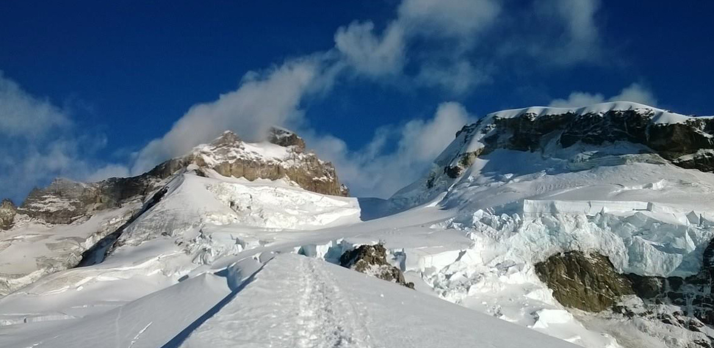
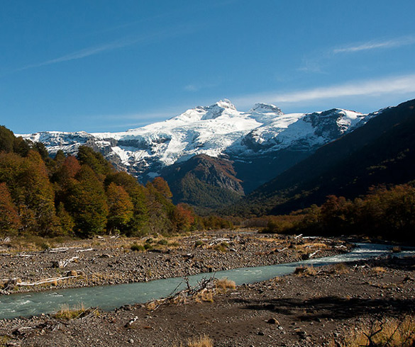

Cerro Tronador
Información:
Se encuentra en la zona sur de la cordillera de los Andes, en la frontera entre Argentina y Chile. Separa dos parques nacionales: el Nahuel Huapi, en las provincias de Río Negro y Neuquén, Argentina; y el Vicente Pérez Rosales en la provincia de Llanquihue, Chile.
El nombre del cerro se debe al ruido que se produce por los frecuentes desprendimientos de hielo en los glaciares, similar al de los truenos. Su altura de 3554 metros sobre el nivel del mar y se destaca entre los macizos montañosos del parque nacional Nahuel Huapi. El Tronador posee un total de siete glaciares los cuales se encuentran actualmente en remisión a causa del calentamiento global.
El Cerro Tronador es el más alto en los alrededores de Bariloche. Tras salir del centro de la ciudad, la mítica ruta Nacional 40 te lleva hacia el sur, recorriendo las costas de los Lagos Gutiérrez y Mascardi hasta empalmar con la ruta Provincial 82.
En el camino encontrarás miradores para disfrutar de las imponentes vistas que ofrecen los cerros Bonete y Cresta de Gallo, o podrás acercarte a alguna de las playas de arena oscura del lago Mascardi. Pasando Villa Mascardi se gira a la derecha y se puede recorrer un camino rodeado de bosques autóctonos. Es una zona de excepcional belleza, visitada cada año por los amantes de la montaña, la escalada y la pesca, ya que se encuentran zonas óptimas como el lago Los Moscos y el río Manso, que conduce hasta el lago Hess.
Al llegar al río Manso (un río que nace en la cima del Tronador y que va cambiando de color a lo largo de su recorrido), podés detenerte en el puente Los Rápidos para observar a las truchas nadando apresuradas en el agua cristalina. Si la suerte acompaña, también es posible ver algún martín pescador.
La ruta continúa a través de un sinuoso camino, ascendiendo hasta alcanzar el punto de máxima altura de todo el recorrido. Desde allí se observa el valle del río Manso superior en casi toda su extensión, con su curso serpenteante y de aguas color verdoso. Siguiendo hasta Pampa Linda, encontrarás un bello lugar donde se encuentran servicios de alojamiento y gastronomía. Desde aquí se emprende camino hasta la base del cerro, donde se encuentra una cálida confitería y desde allí se pueden observar otros glaciares del Tronador.
El ascenso continúa hasta llegar al último mirador del recorrido, el Ventisquero Negro, un glaciar que desciende desde el Tronador y que se destaca por su color oscuro. De regreso se puede tomar el desvío del camino que llega a la cascada Los Alerces para contemplar esta caída de agua de 30 metros de altura.